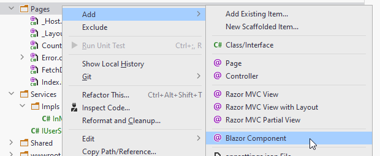
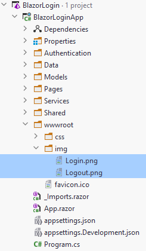

- 1 Welcome
- 2 The project
- 3 Wrap in auth
- 4 Disable server-side rendering
- 5 User class
- 6 Authentication manager interface
- 7 AuthenticationStateProvider
- 8 IUserService
- 9 IAuthManager implementation
- 10 IUserService implementation
- 11 Registering services
- 12 Login page code
- 13 Login page view
- 14 Testing
- 15 Button component
- 16 Security disclaimer
Welcome to Blazor-server login
This tutorial will take you through how to set up a simple login system for Blazor-server. It can most likely not be converted to Blazor-wasm.
This approach will use your own User/Profile/Account type, or whatever you call it. You will manage
storage of the users.
We will use the built in AuthenticationStateProvider class, extend it to provide the
necessary authorization information.
We will not be using the Identity framework. That's a different approach.
This is mostly a toy example to be used for your semester projects.
We will go through how to set it up from a new default Blazor-server project. Later, you can then reuse the steps to add login/authorization functionality to other Blazor-server apps.
As always you can find the entire example on GitHub here
New solution, new project
First, you need a solution. That could be an existing, or a new one.
Inside this solution, create a new Blazor-server project (or use an existing, in which case skip the below steps about creating a new project).

And then:

1 Select ASP.NET
2 Choose a name for the project
3 Select Blazor Server App
4 Choose No authentication. (This is where you
alternatively could choose the Identity framework)
5 Create the project
Overview
The below diagram will give an overview of the classes we need.

The "Blazor app" represents your app. The blue, abstract class is from the authorization framework, already in Blazor. It is used by the app to request information about who's logged in.
We need the SimpleAuthenticationStateProvider to provide that logged in information,
whenever the Blazor app requests it. It overrides the method GetAuthenticationStateAsync
from the super class.
The IAuthManager interface is used to handle logging in and out from your app,
e.g. it is used by your log in component in your Blazor app.
The implementation, AuthManagerImpl will manage retrieving the user from a service
interface,
and cache that user in your browser, so that it can be provided to SipmleAuthenticationStateProvider
whenever needed.
The IUserService is a data access interface, currently with just one method, which can
retrieve a User object.
The InMemoryUserService is a dummy database, which just has a list of 3 hardcoded users.
The following slides will go through how to set up everything.
Wrap the app in authentication
We must make available the authentication state to the entire app.
We do this by wrapping the app in a CascadingAuthenticationState component.
Open the file app.razor, and modify it to the yellow highlighted, like so:

You update those three highlighted places.
Each page/component of your app can now request information about who is logged in, if any.
Disable server-side pre-rendering
Blazor-server has two render modes:
- Server-Render is where the component should be rendered interactively by the Blazor Server app.
- ServerPrerendered Statically prerender the component along with a marker to indicate the component should later be rendered interactively by the Blazor Server app.
As explained here.
It's not particularly important for you to understand the differences. But we must change the render mode from ServerPrerendered to Server. This is because javascript is only available, when we do not prerender, and we need this later.
Open the file Pages/_Host.cshtml.
Modify the following:

If we do not do this, later, we will get an expception about javascript interop not being available.
The user class
This class holds information about the user.
Create a new directory, call it Models (or whatever you please).
Inside this directory, create a new class, User, or whatever you wish. In this example it looks like below. Yours could be different.
namespace BlazorLoginApp.Models;
public class User
{
public string Name { get; set; }
public string Password { get; set; }
public string Role { get; set; }
public int SecurityLevel { get; set; }
public int BirthYear { get; set; }
public User(string name, string password, string role, int securityLevel, short birthYear)
{
Name = name;
Password = password;
Role = role;
SecurityLevel = securityLevel;
BirthYear = birthYear;
}
}
You may define your User with other fields, but these are the ones we will use in this example. With this, we can demonstrate privilege by level and privilege by role. Two different approaches.
Privilege by level
With privilege by level, each security level is allowed more access than the one before it. This could often be seen as "guest", "registered user", "admin".
Privilege by role
With the roles, we can provide access to different places of the system, to different types of users.
There is not necessarily a hierarchy here, where one can do more than the other. Instead each type is allowed access to different parts of the system.
I have here tried to imply that the Product manager may access some customer data, maybe view certain things, but not modify. I.e. only read access.
Maybe the Customer Service Assistant view some product orders by customers, but cannot modify anything.
Authentication manager interface
We need a class, which can handle logging in and logging out.
Initially we will just create the interface. We will provide the implementation later.
Create a new directory, call it Authentication.
Inside the Authentication directory, create the following interface:
using System.Security.Claims;
namespace BlazorLoginApp.Authentication;
public interface IAuthManager
{
public Task LoginAsync(string username, string password);
public Task LogoutAsync();
public Task<ClaimsPrincipal> GetAuthAsync();
public Action<ClaimsPrincipal> OnAuthStateChanged { get; set; }
}
This interface (and its implementation) will be used in the Blazor app, whenever we wish to log in or out.
The property at the bottom is an Action.
The idea is that another class (SimpleAuthenticationStateProvider) will listen to the
IAuthManager implementation for changes in authentication state, i.e. an event will be fired whenever
someone logs in or out.
The Blazor framework can then react to this.
AuthenticationStateProvider
This is an abstract class which exists in the Blazor framework. It is used to provide information about who is logged in, and what priviliges they have.
We must extend this class, and override the method which is called by Blazor to get the login/auth information.
Inside Authentication directory: create a new class, SimpleAuthenticationStateProvider, or
whatever you want to call it.
It looks like this, code is explained below.
using System.Security.Claims;
using Microsoft.AspNetCore.Components.Authorization;
namespace BlazorLoginApp.Authentication;
public class SimpleAuthenticationStateProvider : AuthenticationStateProvider
{
private readonly IAuthManager authManager;
public SimpleAuthenticationStateProvider(IAuthManager authManager)
{
this.authManager = authManager;
authManager.OnAuthStateChanged += AuthStateChanged;
}
public override async Task<AuthenticationState> GetAuthenticationStateAsync()
{
ClaimsPrincipal principal = await authManager.GetAuthAsync();
return await Task.FromResult(new AuthenticationState(principal));
}
private void AuthStateChanged(ClaimsPrincipal principal)
{
NotifyAuthenticationStateChanged(
Task.FromResult(
new AuthenticationState(principal)
)
);
}
}
So, a few things to understand.
We get an instance of IAuthManager through the constructor, i.e. constructor dependency injection. If we register an IAuthManager as a service in Program.cs, the framework will create an instance for us automatically. We'll do this later.
The method GetAuthenticationStateAsync() is called by the framework whenever we have a page
or component, which requires any kind of authorization.
Maybe you are accessing a page that is secured by a requirement to be an admin. Blazor will ask
the above class, if the current user should have access.
Or maybe you have some parts of a page, which should only be shown, if someone is logged in. Then Blazor
will ask this class, if anyone is logged in.
So, it's used a lot.
In the constructor, the second line, we subscribe to events from the IAuthManager, i.e. when you log in,
an event will be fired.
In that case, we want the SimpleAuthenticationStateProvider to notify the blazor app about a change to
the current authentication state: The method AuthStateChanged is called upon such an event,
and this method itself notifies the app about a change.
Register the service
We need to register this class as a service, so the app can create it when needed.
Open Program.cs.
In here, add the following line:

IUserService
We need an interface which can provide us with user objects. We will put this in a different directory,
because it is not directly associated with authentication.
This isn't really all that relevant, you can put things wherever you wish. But still.
Create a directory, Services.
Inside here, create an interface IUserService:
using BlazorLoginApp.Models;
namespace BlazorLoginApp.Services;
public interface IUserService
{
public Task<User> GetUserAsync(string username);
}
Later, we could add other methods for adding, removing, getting all users, updating a user, etc. That is, however, not relevant in this tutorial.
Note
This is a "service" class, which later in the course will be moved to the server. The AuthManager will remain on the client side, as that is tightly coupled with the auth framework.
IAuthManager implementation
Now that we have the IUserManager, we can create a class that uses it.
In the directory Authentication, create the following class. Explanation below.
using System.Security.Claims;
using System.Text.Json;
using BlazorLoginApp.Models;
using BlazorLoginApp.Services;
using Microsoft.JSInterop;
namespace BlazorLoginApp.Authentication;
public class AuthManagerImpl : IAuthManager
{
public Action<ClaimsPrincipal> OnAuthStateChanged { get; set; } = null!; // assigning to null! to suppress null warning.
private readonly IUserService userService;
private readonly IJSRuntime jsRuntime;
public AuthManagerImpl(IUserService userService, IJSRuntime jsRuntime)
{
this.userService = userService;
this.jsRuntime = jsRuntime;
}
public async Task LoginAsync(string username, string password)
{
User? user = await userService.GetUserAsync(username); // Get user from database
ValidateLoginCredentials(password, user); // Validate input data against data from database
// validation success
await CacheUserAsync(user!); // Cache the user object in the browser
ClaimsPrincipal principal = CreateClaimsPrincipal(user); // convert user object to ClaimsPrincipal
OnAuthStateChanged?.Invoke(principal); // notify interested classes in the change of authentication state
}
public async Task LogoutAsync()
{
await ClearUserFromCacheAsync(); // remove the user object from browser cache
ClaimsPrincipal principal = CreateClaimsPrincipal(null); // create a new ClaimsPrincipal with nothing.
OnAuthStateChanged?.Invoke(principal); // notify about change in authentication state
}
public async Task<ClaimsPrincipal> GetAuthAsync() // this method is called by the authentication framework, whenever user credentials are reguired
{
User? user = await GetUserFromCacheAsync(); // retrieve cached user, if any
ClaimsPrincipal principal = CreateClaimsPrincipal(user); // create ClaimsPrincipal
return principal;
}
private async Task<User?> GetUserFromCacheAsync()
{
string userAsJson = await jsRuntime.InvokeAsync<string>("sessionStorage.getItem", "currentUser");
if (string.IsNullOrEmpty(userAsJson)) return null;
User user = JsonSerializer.Deserialize<User>(userAsJson)!;
return user;
}
private static void ValidateLoginCredentials(string password, User? user)
{
if (user == null)
{
throw new Exception("Username not found");
}
if (!string.Equals(password,user.Password))
{
throw new Exception("Password incorrect");
}
}
private static ClaimsPrincipal CreateClaimsPrincipal(User? user)
{
if (user != null)
{
ClaimsIdentity identity = ConvertUserToClaimsIdentity(user);
return new ClaimsPrincipal(identity);
}
return new ClaimsPrincipal();
}
private async Task CacheUserAsync(User user)
{
string serialisedData = JsonSerializer.Serialize(user);
await jsRuntime.InvokeVoidAsync("sessionStorage.setItem", "currentUser", serialisedData);
}
private async Task ClearUserFromCacheAsync()
{
await jsRuntime.InvokeVoidAsync("sessionStorage.setItem", "currentUser", "");
}
private static ClaimsIdentity ConvertUserToClaimsIdentity(User user)
{
// here we take the information of the User object and convert to Claims
// this is (probably) the only method, which needs modifying for your own user type
List<Claim> claims = new()
{
new Claim(ClaimTypes.Name, user.Name),
new Claim("Role", user.Role),
new Claim("SecurityLevel", user.SecurityLevel.ToString()),
new Claim("BirthYear", user.BirthYear.ToString()),
new Claim("Domain", user.Domain)
};
return new ClaimsIdentity(claims, "apiauth_type");
}
}
Notice the version on GitHub may look slightly different, but the functionality is the same.
Yes, it's a bit of a long one. Luckily for you, you shouldn't need to change too much here to adapt the class to your own Blazor app later.
Of course, if instead of User, you want another type, like Profile or Account, then you
would have to swap that out.
We will take chunks out of the above class, and explain small parts at a time.
But first, two classes:
ClaimsIdentity and ClaimsPrincipal
The ClaimsPrincipal is a class the blazor authentication framework knows about. This is
essentially its own user type. You have created a User, or Account or Profile or whatever.
Blazor uses a ClaimsPrincipal.
Your User contains information about the user. The ClaimsPrincipal also
contains information.
This information is put into a ClaimsIdentity, which is essentially just a map of key-value
pairs. E.g.:
["Username", "Troels"]
["Role", "Teacher"]
["SecurityLevel", "3"]
The Blazor app can then retrieve the relevant information when needed, e.g. when checking if the user is allowed to view or interact with certain parts of the app. Or if a greeting, "Welcome Anon", should be displayed when you are logged in.
Short point: We need to convert your custom user object to a ClaimsPrincipal, so Blazor understands it.
Okay, the code then:
Fields and constructor
First, the fields:
public Action<ClaimsPrincipal> OnAuthStateChanged { get; set; } = null!;
private readonly IUserService userService;
private readonly IJSRuntime jsRuntime;
public AuthManagerImpl(IUserService userService, IJSRuntime jsRuntime)
{
this.userService = userService;
this.jsRuntime = jsRuntime;
}
We have the Action, OnAuthStateChanged, so we can notify the SimpleAuthenticationStateProvider
about logging in and out.
In .NET6 they have introduced a feature, so that you should explicitly define which variables can be
null. That is why it is instantiated to null!.
Then the IUserService, which is injected through the constructor.
Dependency injection again here.
I plan on just keeping users in a List for this tutorial,
but later the implementation could be swapped out for a database or file.
So, to ease the swapping, we depend on an interface, which is provided through the constructor. No
dependencies to an implementation.
The IJSRuntime is a class which can call javascript methods. We need that to store some
data temporarily in the browser.
The constructor receives relevant arguments.
Log in
public async Task LoginAsync(string username, string password)
{
User? user = await userService.GetUserAsync(username);
ValidateLoginCredentials(password, user);
await CacheUserAsync(user!);
ClaimsPrincipal principal = CreateClaimsPrincipal(user);
OnAuthStateChanged?.Invoke(principal);
}
This method is to be called from some page, when we wish to log in. The method is asynchronous, because it does things, which takes time, potentially, like network calls.
username and password are provided as arguments.
First, we ask the userService to retrieve a User object based on the username.
Notice I don't pass the password here. This GetUserAsync will eventually contact a server
somewhere, and we don't want to send the password around for hackers to sniff out. There may be better
approaches.
The User? indicates that this variable may be null in case no user exists with
the provided username.
Then the User object is validated. The method is shown later, but it just checks if the user is not null and that the provided password matches the password of the user. If either fails, an exception is thrown.
If all is good, we then cache the user. This means we take the user object, and store it in the browser. Why is this necessary? There are alternatives, but this approach seems to work well.
The IAuthManager will be added as scoped, i.e. a new instance is created whenever a new tab is
opened, or the current is refreshed. Experience has shown that refreshes happens
occasionally, which results in a new IAuthManager instance, meaning you loose data about the currently
logged in user: You will have to log in to the app often, which is annoying.
Therefore, we cache the user in the browser, so it can be retrieved after a page refresh.
We create a new ClaimsPrincipal based on the user. Blazor authentication framework works
with ClaimsPrincipals. It's just a class to hold information about the user.
Finally, we invoke the OnAuthStateChanged to let anyone listening know about the logging in.
The SimpleAuthenticationStateProvider has subscribed to this action, so it is notified when
the action is invoked.
Log out
This method is to be called when the user wishes to log out.
public async Task LogoutAsync()
{
await ClearUserFromCacheAsync();
ClaimsPrincipal principal = CreateClaimsPrincipal(null);
OnAuthStateChanged?.Invoke(principal);
}
First, we clear the cached user from the browser storage (method shown later).
We then create a ClaimsPrincipal from 'nothing', i.e. null. This will clear user
information, and essentially say to the authentication framework, that no user is logged in.
Then we notify the SimpleAuthenticationStateProvider that the user has logged out.
Get authentication
This method is used by SimpleAuthenticationStateProvider whenever the user is accessing a
page with any kind of authentication/authorization requirement.
SimpleAuthenticationStateProvider will call this method to retrieve information about the
logged in user.
public async Task<ClaimsPrincipal> GetAuthAsync()
{
User? user = await GetUserFromCacheAsync();
ClaimsPrincipal principal = CreateClaimsPrincipal(user);
return principal;
}
First the data from the browser storage is retrieved.
If no user is stored, we may get null back, so User? indicates this variable can be null.
We create a ClaimsPrincipal, i.e. take the user information and put it into a ClaimsPrincipal.
Then the ClaimsPrincipal is returned.
Optimization
This method could be optimized if the reader is interested. Currently, whenever the authentication state is needed (which is potentially quite often), we retrieve the cached user from the browser session storage, and converts it to a ClaimsPrincipal.
This
principalcould be stored in a field variable, to we have a local cache as well. TheGetAuthAsync()method would then first check if the field is null, if not just return that. This will save us the effort of retrieving the session storage user and converting it.We should then remember to also clear the local cached upon logging out, i.e. set it to an "empty" ClaimsPrincipal.
Implementation is left to the reader.
Get cached user
private async Task<User?> GetUserFromCacheAsync()
{
string userAsJson = await jsRuntime.InvokeAsync<string>("sessionStorage.getItem", "currentUser");
if (string.IsNullOrEmpty(userAsJson)) return null;
User user = JsonSerializer.Deserialize<User>(userAsJson)!;
return user;
}
The session storage is sort of like a tiny temporary database, or map, in the browser, where we can put
data. The data will be erased when the browser tab is closed, i.e. the session is over.
The user-as-json is first retrieved, then checked for null.
The user in the session storage is stored as json, so the next line deserializes the json into a user
object.
Notice the ! at the end, this is to suppress the warning, that userAsJson may
be null, but we just checked that above, so we are not worried about this warning.
Validation
private void ValidateLoginCredentials(string password, User? user)
{
if (user == null)
{
throw new Exception("Username not found");
}
if (!password.Equals(user.Password))
{
throw new Exception("Password incorrect");
}
}
This method just validates if a user was found, i.e. it is not null. And then check if the
password stored in the database matches the password typed in by the user.
If encryption of passwords were used, we would first encrypt the password argument before
comparing to the encrypted password stored in the database, i.e. the data in user.Password.
In this toy example, encryption is ignored, and left to the reader to implement, if needed.
ClaimsPrincipal
private ClaimsPrincipal CreateClaimsPrincipal(User? user)
{
if (user != null)
{
ClaimsIdentity identity = ConvertUserToClaimsIdentity(user);
return new ClaimsPrincipal(identity);
}
return new ClaimsPrincipal();
}
This method takes the user, and if it is not null, puts the information into a ClaimsIdentity
object, which is inserted into a ClaimsPrincipal and returned.
The ClaimsIdentity is essentially just a map of keys and values. The method will come later.
If there is no user, an "empty" ClaimsPrincipal is returned instead.
Caching the user
private async Task CacheUserAsync(User user)
{
string serialisedData = JsonSerializer.Serialize(user);
await jsRuntime.InvokeVoidAsync("sessionStorage.setItem", "currentUser", serialisedData);
}
This method takes a user object, serializes it to json, and then stores in the session storage, so we can retrieve it later.
Clearing the cached user
Whenever we log out, we want to delete the user information stored in the session storage. The below method clears that data:
private async Task ClearUserFromCacheAsync()
{
await jsRuntime.InvokeVoidAsync("sessionStorage.setItem", "currentUser", "");
}
Converting user to claims
And finally, the method which takes your custom User object and converts the information
into something the Blazor authentication/authorization can understand: A ClaimsIdentity.
private ClaimsIdentity ConvertUserToClaimsIdentity(User user)
{
List<Claim> claims = new()
{
new Claim(ClaimTypes.Name, user.Name),
new Claim("Role", user.Role),
new Claim("SecurityLevel", user.SecurityLevel.ToString()),
new Claim("BirthYear", user.BirthYear.ToString())
};
return new ClaimsIdentity(claims, "apiauth_type");
}
We first create a list of claims: i.e. key-value pairs.
There are some pre-defined ClaimsTypes, e.g. Name. If we set this, we have easy
access to the username throughout the app.
You may find others of relevans, like Role, Surname, etc.
But mostly, you can just define your own keys, like I have done above: "Role" and
"SecurityLevel".
In the end, the ClaimsIdentity is returned.
This is probably the only method you need to modify.
IUserService InMemory implementation
The IUserService is an interface which promises functionality to get users (and, later perhaps, create, update, delete as well).
We must create an implementation for this service. Initially we will make it as simple as possible, just hardcoding a few users and put them in a list.
In the Services directory, create a new directory, "Impls".
Inside this directory, create the following class:
using BlazorLoginApp.Models;
namespace BlazorLoginApp.Services.Impls;
public class InMemoryUserService : IUserService
{
public async Task<User?> GetUserAsync(string username)
{
User? find = users.Find(user => user.Name.Equals(username));
return find;
}
private List<User> users = new()
{
new User("Troels", "Troels1234", "Teacher", 3, 1986),
new User("Maria", "oneTwo3FOUR", "Student", 2, 2001),
new User("Anne", "password", "HeadOfDepartment", 5, 1975)
};
}
Above there is a List of three hard-coded Users in a list.
The GetUserAsync() will find the first user object with a matching username. If none is
found, nullis returned.
At some later point, this implementation could be swapped out with a class, which interacts with a
database. Or a class which makes a call to a server somewhere.
But that is out of scope for this tutorial.
Registering services
The last part of the setup is just to register the services, we have created. We already registered the
SimpleAuthenticationStateProvider.
Again, open the Program.cs.
Add the following two services:

The setup is now complete.
The next step is to add some login functionality.
Login page code
We need a page where we can log in.
Create a new Page:

Code
At the top of the page, we need some directives:
@page "/Login"
@using BlazorLoginApp.Authentication
@inject IAuthManager authManager
@inject NavigationManager navMgr
We give the page a uri sub-path: "/Login", so we can navigate to this page.
We inject an IAuthService, and a NavigationManager.
And then in the code block, the following:
@code {
private string userName;
private string password;
private string errorLabel;
private async Task LoginAsync()
{
errorLabel = "";
try
{
await authManager.LoginAsync(userName, password);
navMgr.NavigateTo("/");
}
catch (Exception e)
{
errorLabel = $"Error: {e.Message}";
}
}
}
Here, fields for holding username, password, and any error messages.
And a method to be called, when we wish to log in. If any exceptions are thrown from LoginAsync(...),
e.g. upon failure in validation,
the exception is caught, and the errorLabel is updated with a message, so that the user is informed of
any errors.
Upon successful login, we use the NavigationManager to change the page to the home page. If
you open Index.razor, you will see the @page directive point to "/".
Next up the page-view.
Login page view
Next up, we will define the view of the login page.
css
First, we need some styling. For this, we will create a style-behind.
Notice that in the right-click context menu, instead of new File, there is also new Stylesheet. Either works just fine.
When we name our css file the same as the razor file, and append .css, it will be a "style-behind",
i.e. a css file only accessibly in this specific page/component.
Add the following to our style behind.
.card {
box-shadow: 0 4px 8px 0 rgba(0,0,0,0.2);
transition: 0.3s;
width: 250px;
padding: 25px;
text-align: center;
margin: auto;
margin-top: 50px;
}
.field {
margin-top: 20px;
}
.loginbtn {
background-color:lightgreen;
border-radius: 5px;
padding: 5px;
padding-left: 10px;
padding-right: 10px;
}
.loginbtn:hover{
transform: scale(1.1);
box-shadow: 0 2px 10px 2px #3f3f3f;
}
You may of course change the styling to your liking.
html
Next up, the actual view:
<AuthorizeView>
<NotAuthorized>
<div class="card">
<h3>Please login</h3>
<div class="field">
<label>User name:</label>
<input type="text" @bind="userName"/>
</div>
<div class="field">
<label style="text-align: center">Password:</label>
<input type="password" @bind="password"/>
</div>
@if (!string.IsNullOrEmpty(errorLabel))
{
<div class="field">
<label style="color: red">
@errorLabel
</label>
</div>
}
<div class="field">
<button class="loginbtn" @onclick="LoginAsync">Log in</button>
</div>
</div>
</NotAuthorized>
<Authorized>
<div class="card">
<h3>Hello, @context.User.Identity.Name</h3>
</div>
</Authorized>
</AuthorizeView>
Notice how the outer tag is a <AuthorizeView> meaning inside this tag, we have access
to check if a user is logged in or not.
Inside this tag, we have two others: <NotAuthorized> and
<Authorized>.
If no-one is logged in, the html inside <NotAuthorized> will be shown.
If someone is logged in, the html inside <Authorized> will be shown.
In line 7 above, we define the user name input field, the type is "text", and we bind the value
to the userName field variable.
Similarly, in line 11, we have an input field of type "password", so that the inputted text is
replaced with ***. Also here, we bind to a field variable.
In line 13, we have an if-statement, so that this <div> is only rendered,
if there is actually something in the errorLabel.
Line 22 holds the button, with the onclick action that calls the method
LoginAsync.
In line 28 you may notice an example of how to retrieve information about the logged in user.
The context variable is available inside <AuthorizedView>-tags. The
User accessed, is not your User class,
it is the ClaimsPrincipal.
UI
The login view will look like this:

Here, we can input username and password. Then click the log in button.
If any errors occur, e.g. no user found, or incorrect password, an error will be shown:
Testing
We can now test the login functionality, and verify everything works as expected.
Run your blazor app. When it's open, go to the uri field, to append "/Login" and thereby manually navigate to the login page:
That should take you to the login page.
Type in credentials for one of your users, if you just copied mine, you can try
- Username: "Troels"
- Password: "Troels1234"
Click Log in button, which should take you to the home page.
You can then manually navigate back to the Login page again, but because you are logged in, it should now just display this:

So far, so good.
But we can still not easily navigate to the Login page, and we cannot log out again. That's the next step.
Button component
We are going to add icons to the top bar to login and logout
Icons
First, we need some icons.
I have uploaded a login and a logout icon to github, you can find them here and here.
{kind=link}
{kind=link}
Just right-click the image and click "save image as", that should let you download the images.
These two images should be stored in a new "img" directory inside the "wwwroot" directory in your project:

Various resources can be put here.
Component
Next up, we need to add a new blazor component in the pages directory. And a style behind:

Styling
Copy the following into your style behind:
.icon {
width: 30px;
cursor: pointer;
}
The code
In your new component, we need a bit of code:
@namespace Login
@using BlazorLoginApp.Authentication
@inject NavigationManager navMgr
@inject IAuthManager authManager
// view stuff here later..
@code {
private void Login()
{
navMgr.NavigateTo("/Login");
}
private async Task Logout()
{
await authManager.LogoutAsync();
navMgr.NavigateTo("/");
}
}
Notice there is no page directive for this component, i.e. we cannot navigate to it, only use it in other components/pages.
First is declared a "@namespace Login", this is needed because this component will be used from something outside of the Pages folder. In those cases we need to define namespaces.
Then we inject the NavigationManager and IAuthManager.
In the code block, we just have two methods.
Login() will navigate to the login page.
Logout() will use the authManager to clear the login status, and the navigate
to the home page.
The view
The view part is equally simple:
<AuthorizeView>
<Authorized>
<img class="icon" src="img/Logout.png" @onclick="Logout"/>
</Authorized>
<NotAuthorized>
<img class="icon" src="img/Login.png" @onclick="Login"/>
</NotAuthorized>
</AuthorizeView>
Again, everything is wrapped in <AuthorizeView so that we can show different things based
on whether the user is logged in or not.
If there is an authorized user, the image of Logout.png is shown, otherwise the Login.png. There is also an onclick handler on both.
Adding to top bar
Open the MainLayout.razor, and add the new component.
Notice we import the Login namespace. And the <LoginButtons> component is added as
well.
@inherits LayoutComponentBase
@using Login
<PageTitle>BlazorServerUI</PageTitle>
<div class="page">
<div class="sidebar">
<NavMenu/>
</div>
<main>
<div class="top-row px-4">
<LoginButtons/>
<a href="https://docs.microsoft.com/aspnet/" target="_blank">About</a>
</div>
<article class="content px-4">
@Body
</article>
</main>
</div>
Now, in the top bar, next to the "About", you should see the login icon.
That should be all. The last slide is about how secure this system is. Or isn't.
Security
This login system is a toy system. It is meant to show how to play around with the authorization of a blazor app. However, it is not particularly secure.
After you log in, you can right-click to inspect the page (1), then you can open the Application tab (2), you may need to click (3) to find it.
In the Application tab, you can see the user as json, we stored in the session storage:

This data can also easily be modified, meaning I could change my Role to be something else, or raise my
security level.
After a page refresh, the blazor authorization would retrieve this updated user instead.
A malicious user might also change the user-name in the cached user, and so, they would be logged in as someone else.
We will not go into details on how to fix this.
However, whenever the user is retrieved from session storage, your program would have to fetch that user
from the database (or wherever), and compare username and password of cached user to the database
user.
If those two do not match, log the user out, or throw an exception.
Implementation is left to the reader.
Last minor optimization
As mentioned earlier, we could also store the ClaimsPrincipal to improve efficiency, something like this:
public async Task<ClaimsPrincipal> GetAuthAsync()
{
if (principal != null)
{
return principal;
}
string userAsJson = await jsRuntime.
InvokeAsync<string>("sessionStorage.getItem", "currentUser");
if (string.IsNullOrEmpty(userAsJson))
{
return new ClaimsPrincipal(new ClaimsIdentity());
}
User? user = JsonSerializer.Deserialize<User>(userAsJson);
principal = CreateClaimsPrincipal(user);
return principal;
}
This would need a field variable for the principal, and we need to set it when logging
in and clear it when logging out (assign null).
It will become null when refreshing the page, in which case the user in session storage
would be fetched.